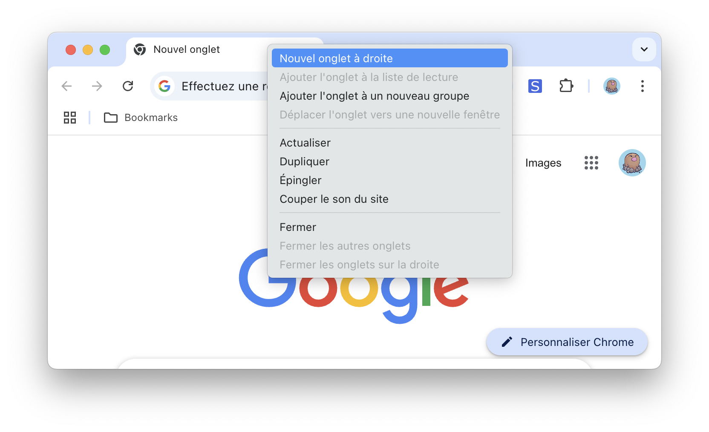
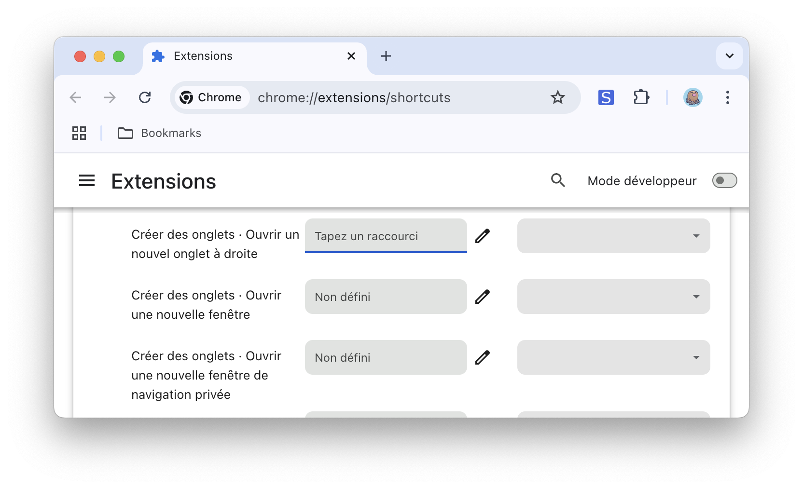
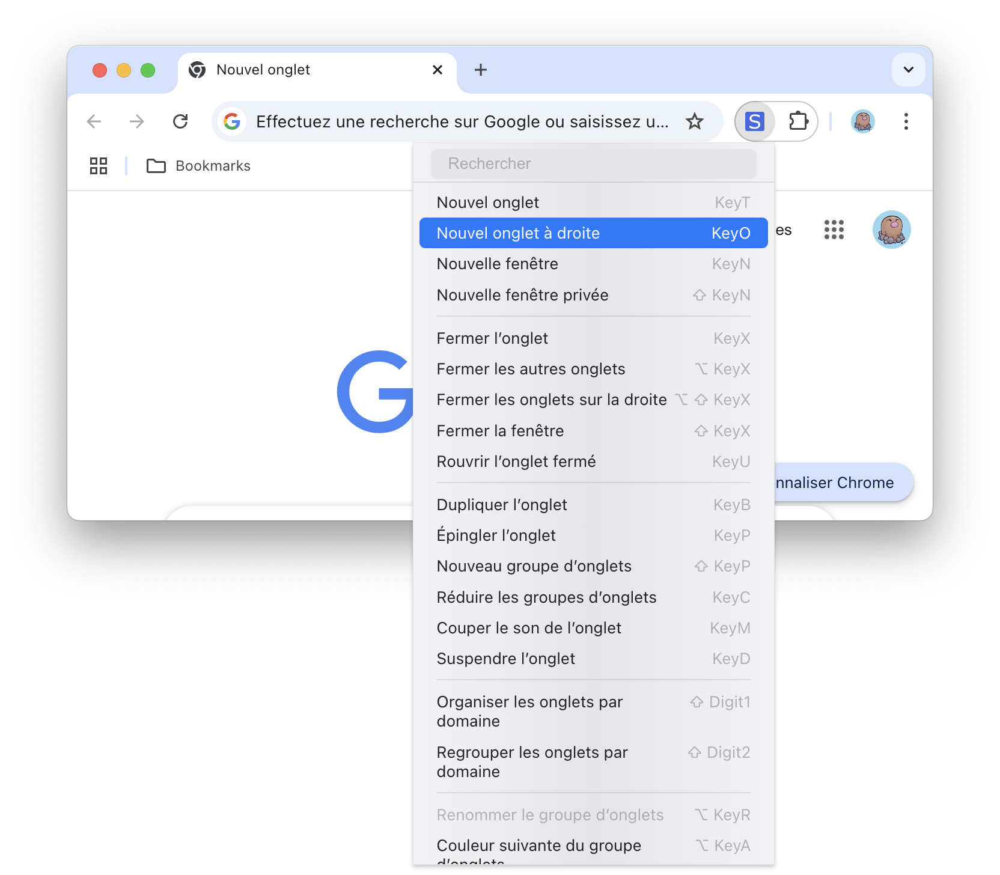

Shortcuts est une extension Chrome qui vous permet d’effectuer des tâches rapidement au clavier.

Vous souhaitez ouvrir un nouvel onglet à droite au clavier ?

Shortcuts vous permet d’assigner des actions à des raccourcis dans les options « Raccourcis clavier ».
Voir la liste des actions.

Intègre un mode « Vim » et une palette de commandes dans le menu de l’extension.
Les actions peuvent être effectuées via le clavier ou la souris.
Voir le guide d’utilisation.